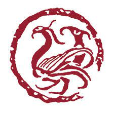
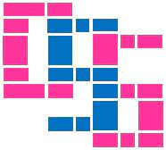
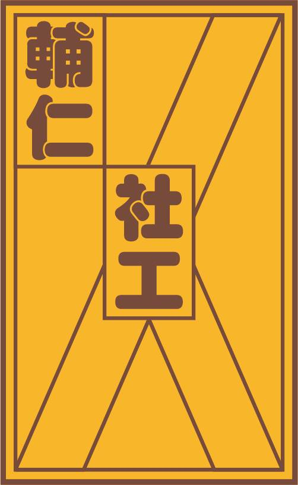
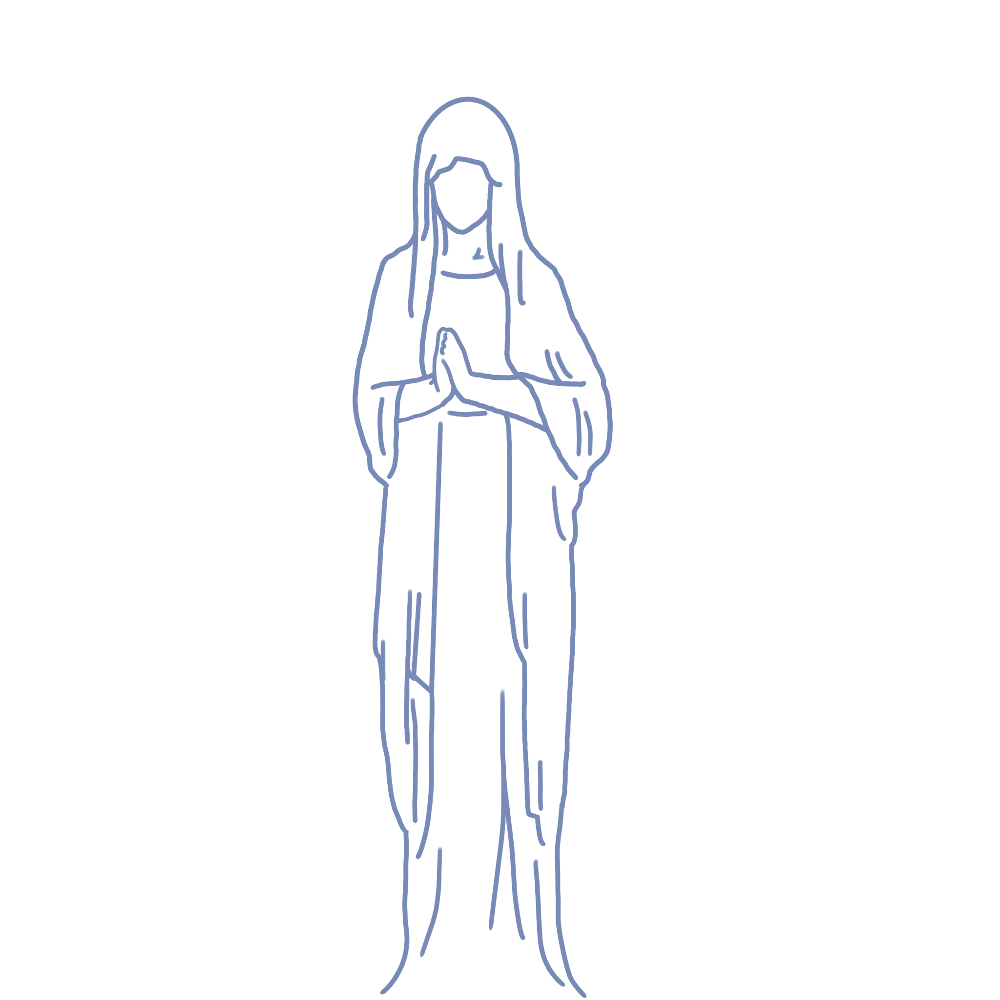

輔大開箱日
學院及學系
文學院
 中國文學系
歷史學系
哲學系
藝術學院
音樂學系
景觀設計學系
應用美術學系
藝術與文化創意學士學位學程
醫學院
醫學系
護理學系
公共衛生學系
臨床心理學系
職能治療學系
呼吸治療學系
生物醫學暨藥學研究所
跨專業長期照護碩士學位學程
生物醫學海量資料分析碩士學位學程
生技醫藥博士學位學程
傳播學院
影像傳播學系
新聞傳播學系
廣告傳播學系
大眾傳播學研究所
大眾傳播學士學位學程
教育學院
圖書資訊學系
體育學系
師資培育中心
教育領導與發展研究所
教育領導與科技發展學士學位學程
運動休閒管理學士學位學程
理工學院
數學系
物理學系
化學系
生命科學系
資訊工程學系
電機工程學系
醫學資訊與創新應用學士學位學程
應用科學與工程研究所
軟體工程與數位創意學士學位學程
外語學院
英國語文學系
德語語文學系
法國語文學系
西班牙語文學系
日本語文學系
義大利語文學系
跨文化研究所
民生學院
食品科學系
營養科學系
兒童與家庭學系
餐旅管理學系
食品營養博士學位學程
法律學院
法律學系
財經法律學系
學士後法律學系
 社會科學院
經濟學系
社會學系
 社會工作學系
宗教學系
心理學系
天主教研修學士學位學程
非營利組織管理碩士學位學程
管理學院
資訊管理學系
金融與國際企業學系
會計學系
企業管理學系
統計資訊學系
國際創業與經營管理學程碩士學位學程
商業管理學士學位學程
社會企業碩士在職學位學程
科技管理學程碩士在職學位學程
商學研究所
國際經營管理碩士班
織品學院
織品服裝學系
品牌與時尚經營管理碩士學位學程
博物館學研究所
進修部
中國文學系
歷史學系
應用美術學系
英國語文學系
日本語文學系
餐旅管理學系
法律學系
經濟學系
藝術與文化創意學士學位學程
大眾傳播學士學位學程
運動休閒管理學士學位學程
軟體工程與數位創意學士學位學程
商業管理學士學位學程
人文社會服務進修學士學位學程
醫學資訊與健康科技進修學士學位學程
長期照護與健康管理進修學士學位學程
資訊創新與數位生活進修學士學位學程
室內設計進修學士學位學程
考生專區
其他資源
雙主修
輔系
跨領域學程
輔仁英語網路學院
推廣教育中心
輔大校園共享軟體下載
輔大聯合診所
輔大附設醫院
我是新生
English
瀏覽次數
網站地圖
close
各單位網頁
國際交流
高中生專區
獎學金與補助
我是新生
產學
瀏覽次數
輔大跨域遊學趣
學院及學系
文學院
中國文學系
歷史學系
哲學系
藝術學院
音樂學系
景觀設計學系
應用美術學系
藝術與文化創意學士學位學程
醫學院
醫學系
護理學系
公共衛生學系
臨床心理學系
職能治療學系
呼吸治療學系
生物醫學暨藥學研究所
跨專業長期照護碩士學位學程
生物醫學海量資料分析碩士學位學程
生技醫藥博士學位學程
傳播學院
影像傳播學系
新聞傳播學系
廣告傳播學系
大眾傳播學研究所
大眾傳播學士學位學程
教育學院
圖書資訊學系
體育學系
師資培育中心
教育領導與發展研究所
教育領導與科技發展學士學位學程
運動休閒管理學士學位學程
理工學院
數學系
物理學系
化學系
生命科學系
資訊工程學系
電機工程學系
醫學資訊與創新應用學士學位學程
應用科學與工程研究所
軟體工程與數位創意學士學位學程
外語學院
英國語文學系
德語語文學系
法國語文學系
西班牙語文學系
日本語文學系
義大利語文學系
跨文化研究所
民生學院
食品科學系
營養科學系
兒童與家庭學系
餐旅管理學系
食品營養博士學位學程
法律學院
法律學系
財經法律學系
學士後法律學系
社會科學院
經濟學系
社會學系
社會工作學系
宗教學系
心理學系
天主教研修學士學位學程
非營利組織管理碩士學位學程
管理學院
資訊管理學系
金融與國際企業學系
會計學系
企業管理學系
統計資訊學系
國際創業與經營管理學程碩士學位學程
商業管理學士學位學程
社會企業碩士在職學位學程
科技管理學程碩士在職學位學程
商學研究所
國際經營管理碩士班
織品學院
織品服裝學系
品牌與時尚經營管理碩士學位學程
博物館學研究所
進修部
中國文學系
歷史學系
應用美術學系
英國語文學系
日本語文學系
餐旅管理學系
法律學系
經濟學系
藝術與文化創意學士學位學程
大眾傳播學士學位學程
運動休閒管理學士學位學程
軟體工程與數位創意學士學位學程
商業管理學士學位學程
人文社會服務進修學士學位學程
醫學資訊與健康科技進修學士學位學程
長期照護與健康管理進修學士學位學程
資訊創新與數位生活進修學士學位學程
室內設計進修學士學位學程
考生專區
其他資源
雙主修
輔系
跨領域學程
輔仁英語網路學院
推廣教育中心
輔大校園共享軟體下載
輔大聯合診所
輔大附設醫院
我是新生
我是新生
新生入學專區
學生資訊入口網
Tronclass教學平台
輔大選課資訊網
開課資料查詢
學生選課系統
全人教育課程中心
通識、體育選課系統
各單位網頁
業務單位聯絡方式
行政服務
教務處
學務處
總務處
軍訓室
公共事務處
教學單位一覽表
圖書館
學生輔導中心
服務學習中心
國際交流
國際及兩岸教育處
國際學生中心
外國學生申請入學
僑生陸生輔導組
赴姊妹校交換學生
姊妹校列表
外國籍學位生
來校交換生
高中生專區
宿舍服務中心
開課資料查詢
學生自治組織一覽表
社團一覽表
輔大地圖
地理位置與交通
獎學金與補助
學生事務處生活輔導組
就學貸款
就學優待減免
獎助學金資訊系統
急難救助
學雜分費專區
產學
職涯發展與就業輔導組
實習機會
產學資源整合中心
English
<<<<<<< HEAD
=======
最新消息
更多消息
close
更多消息
搜尋消息
每月消息
網站地圖
特色優化教室
輔大大事記
1925
由美國本篤會於北京創辦，初期設大學預科名為「北京公教大學附屬輔仁社」
 歷史學系
歷史學系 哲學系
哲學系 藝術學院
藝術學院 景觀設計學系
景觀設計學系 應用美術學系
應用美術學系 影像傳播學系
影像傳播學系 師資培育中心
師資培育中心 理工學院
理工學院 電機工程學系
電機工程學系 英國語文學系
英國語文學系 西班牙語文學系
西班牙語文學系 法律學院
法律學院 法律學系
法律學系 財經法律學系
財經法律學系 經濟學系
經濟學系 社會工作學系
社會工作學系 宗教學系
宗教學系 非營利組織管理碩士學位學程
非營利組織管理碩士學位學程 商業管理學士學位學程
商業管理學士學位學程 織品學院
織品學院 織品服裝學系
織品服裝學系 博物館學研究所
博物館學研究所 中國文學系
中國文學系 日本語文學系
日本語文學系 餐旅管理學系
餐旅管理學系 法律學系
法律學系 商業管理學士學位學程
商業管理學士學位學程